Computer Vision and Grahpics Academic Projects
Single View, 3D Face Reconstruction
Implemented a fully automatic, state of the art single view reconstruction system for human faces. The reconstruction is achieved by decomposing the image into its intrinsic components namely diffuse, specular, albedo and lighting. A realistic shading model is used in the process which includes effects like subsurface scattering and specular highlights . We were able to get a high quality reconstruction and capture features like small wrinkles and pimples. Report, Video, Poster
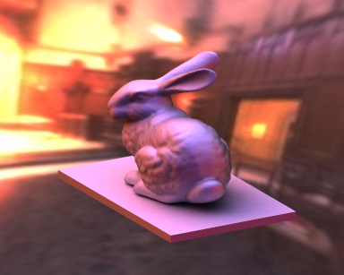 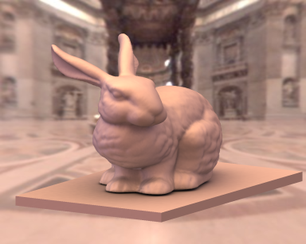
PRE-COMPUTED RADIANCE TRANSFER SYSTEM BASED ON SPHERICAL HARMONICS
A real-time rendering system for Lambertian and glossy surfaces. The system is capable of handling soft shadows and radiance self-transfer under dynamic environment lighting. In order to achieve real-time rendering, we use a representation which captures an object's response to distant illumination. The response signal, being pre-computed and stored densely over the surface of the object, encodes how light from the environment is redistributed by the geometry into exitance radiance. At run-time, we apply the response to a parameterized environment radiance map, and obtain the transferred radiance over the object surface. The computation is done under spherical harmonic basis for enhanced performance. This allows us to switch between different environment maps and rigidly rotate objects with full global illumination effects without substantial computational overhead. Report, Video
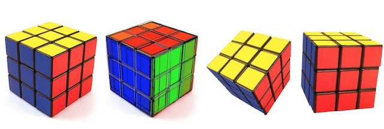 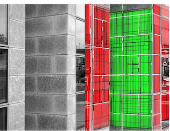 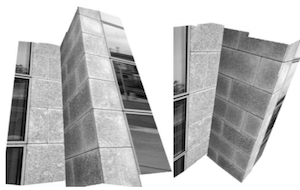
Shape from Angle Regularity(SVR)
Single View Reconstruction is an ill-posed problem in general as the objective is to recover 3D structure of world form a single 2D image. Several cues are used to impose extra constraints of the world to recover feasible structure. My research group proposed a new cue to recover 3D man-made structure due to the abundance of orthognal angles in such scenareos. This is known as shape from angle regularity. I worked on improvement of SfAR (Shape from Angle regularity). I devised a restriction on search space for the core optimization involved, resulting in improved stability. Reference: Zaheer, A., Rashid, M., Riaz, M. A., & Khan, S. (2018). Single-View Reconstruction using orthogonal line-pairs. Computer Vision and Image Understanding, 172, 107-123.
Convolutional Neural Networks
This project explores the application of convolutional neural networks to multiclass classification, specifically, in the classification of handwritten digits in the MNIST dataset. We present a simple to use reconfigurable architecture for developing a convolutional neural network model. We evaluate the performance of some of these architectures/models on the MNIST dataset. Interestingly, we discover that the max pooling marginally improves accuracy and that the network architecture has a significant impact on the iteration profile. We report an accuracy of greater than 91% on the test data classification of the MNIST images. Report
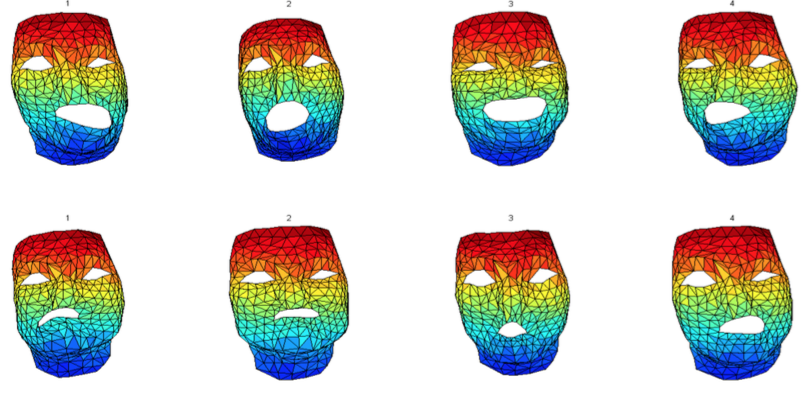 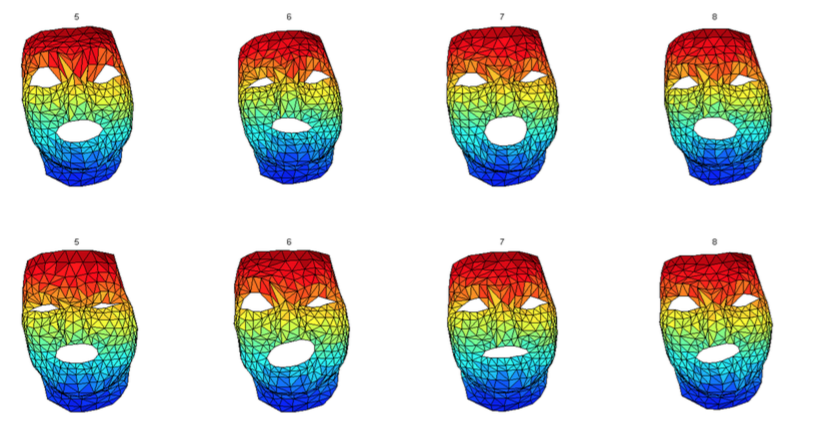 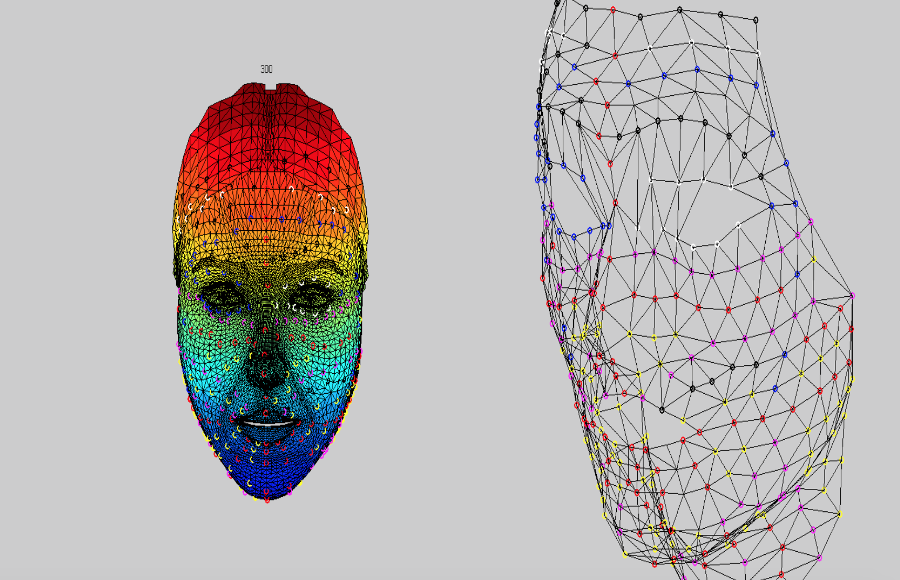
3D-character Expression Retargeting
Given sparse MoCap data of an actor's faceial expression, the goal of this project was to retarget those expressions onto a dense point cloud of another character. We computed the spatio-temporal basis to retarget this information from one character to another. This basis model exploits the fact that this data is highly sparse and any possible expression can pe synthesized as a linear combination of very few basis vectors. We also tried to compute the basis of 3D character automatically in which we failed. To overcome this problem, we provide a tool to manually generate these basis given the point cloud of the mean pose. Report (This project was based on Ijaz Akhter, T. Simon, S. Khan, I. Matthews, Y. Sheikh. Bilinear Spatiotemporal Basis Models. ACM Transactions on Graphics (TOG), Vol 31(2), No. 17, April 2012.)
Professional Projects
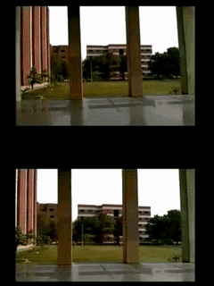
Video Stabilization
Working at Multi-core Systems Pakistan, I designed a complete video stabilization system, removing jitter from hand held camera videos while preserving the smooth camera motion. The stabilization was achieved using global flow to compute affine tranforms between frames and low-pass filtered to allow smooth camera motion. Experimentation was done to choose between sparse vs dense flow, and affine vs perspective transform. The sample input output video can be by the link bellow: Video
Other Undergraduate Projects
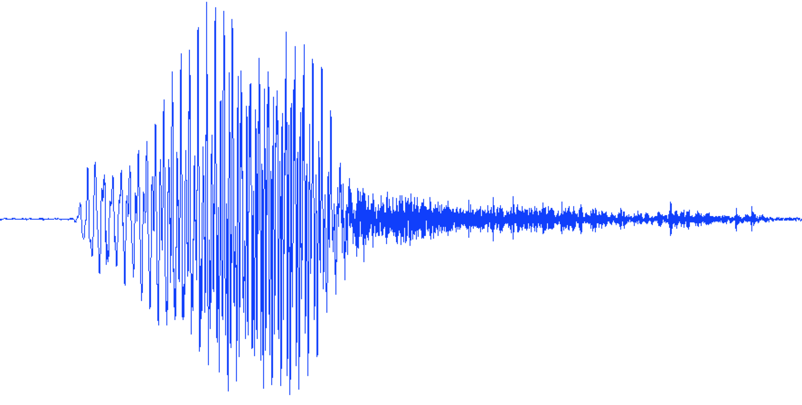 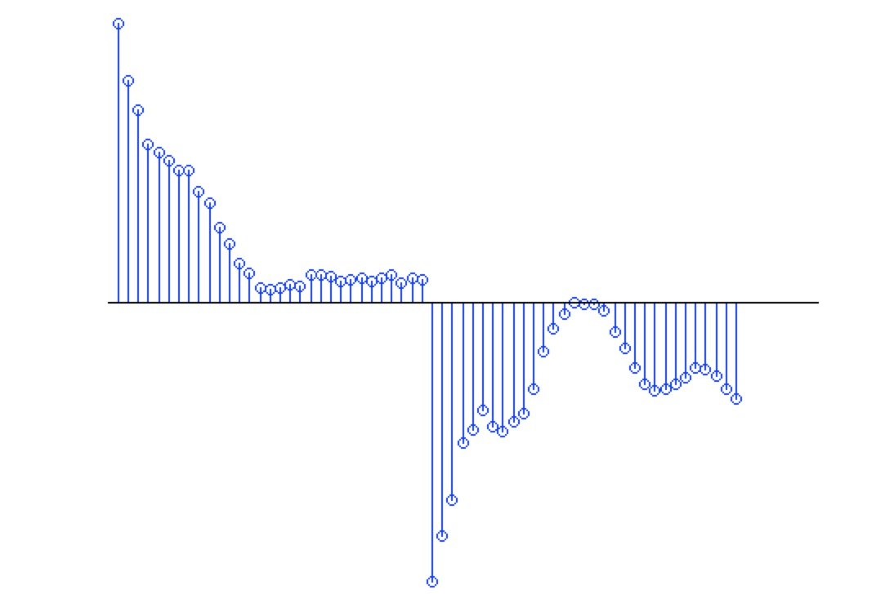
Speech Recognition
In my freshman year, I did a project on speech recognition. The goal of the project was to make a voice command controlled application that lets its users perform various tasks on computer solely through voice commands. The program was able to distinguish between a vocabulary of 20 words. User was given with functionality to build their word libraries as well. Word recoginition was achienved by dividing the speach into small time steps and at each time step, the energy stored in small ranges of frequency were used as features.
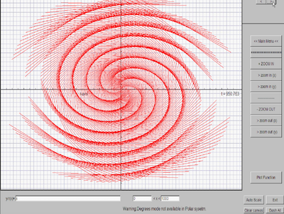
Generic Function Plotter
As a sophomore year student, I developed a function plotting tool in C++. This tool has a user friendly GUI and is able to parse a generic multi-variable function expression and plot its surface in reasonable axis limits. The program has a variety of controls like plot quality and polar/cartesian coordinates. Report, Video
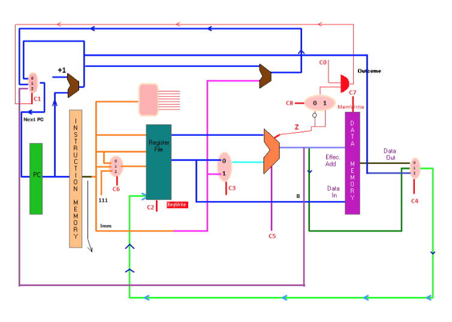
Micro-processor design
For Computer Organization course, we designed and fabricated a 16-bit microprocessor which could be programmed into assembly language by plugging in burnt ROMS. The micro-processor was able to perform complex functionality due to its ability to accomodate user defined functions inside the assembly. Report
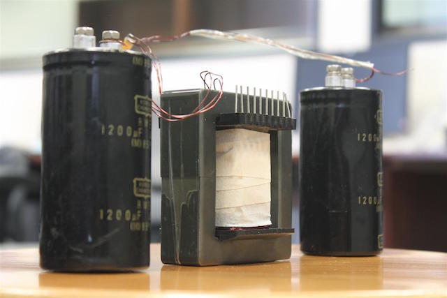
Pure-sine wave power inverter
As a senior year project, I designed a low-cost, highy-efficiency power inverter. The designed inverter has a pure sine-wave output waveform, unlike many commercial products which generate modified sine-wave. This modified sine-wave is not only less efficient, but can also damage some of the electronics not designed to be run by low quality input current. Report
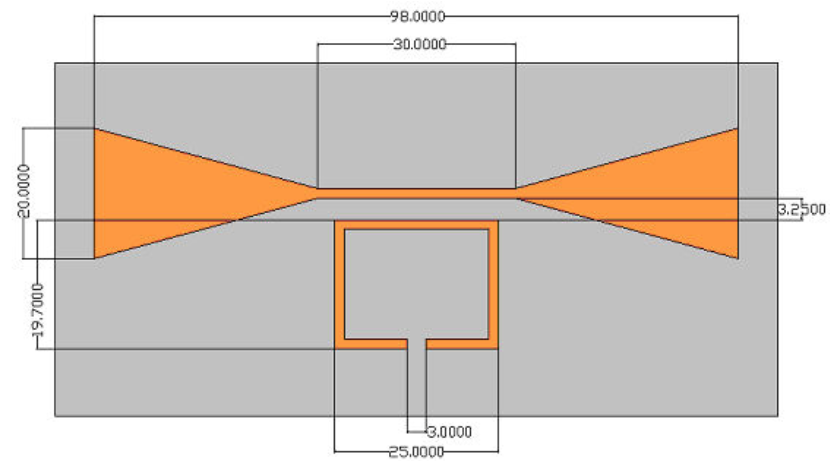
Radio Frequency Identification, Antenna Design
For a summer intership, I explored the RFID system deisgn. My main focus was to design the antennas for such systems, operating at 125 kHz (long wave). For this purpose I used a simulation tool named High Frequency Structure Simulator (HFSS). Report